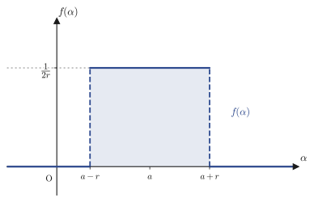
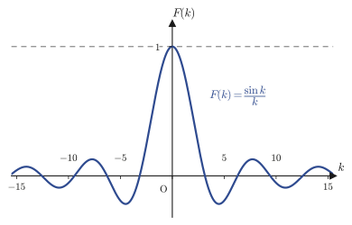
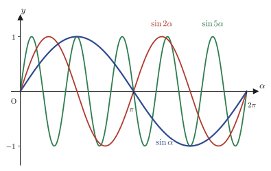
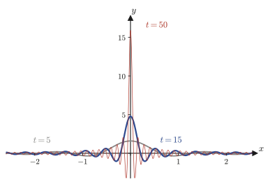
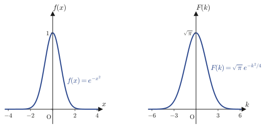
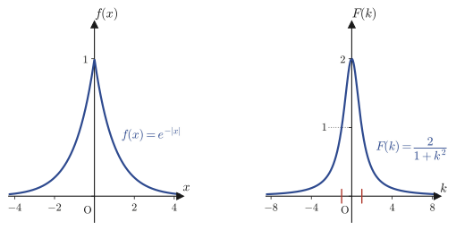
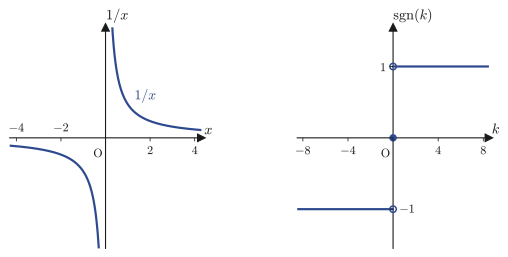

第30章フーリエ変換
第27章・第28章では，周期 $2L$ をもつ周期関数 $f(x+2L)=f(x)$ を，三角関数（またはその複素数版である複素指数関数）の無限級数として表す方法——フーリエ級数——を学んだ．第29章では，その級数がいつ，どんな意味で $f(x)$ に収束するかを保証する収束定理（フーリエの定理）を確認した．しかし，世の中の「波」や「信号」は，必ずしも周期的とは限らない．一度だけ鳴るパルス，衝突の瞬間だけ働く力，観測装置に飛び込んでくる1個の光パルス——これらはどれも，いわば「周期 $2L=\infty$ の関数」である．本章では，周期を無限大に飛ばす極限をとることで，周期関数の道具であったフーリエ級数を，非周期関数にも使える道具——フーリエ変換（Fourier transform）——へと拡張する．
到達点は次の4つである．(1) フーリエ変換 $\Four[f(x)](k)=\displaystyle\int_{-\infty}^{\infty}f(x)e^{-ikx}\dd x$ とその逆変換を，複素フーリエ級数の極限として自分の手で導く．(2) 矩形パルスや複素指数関数のフーリエ変換を計算し，「幅を0に近づけた極限」として現れるデルタ関数 $\delta(x)$ という新しい道具に出会う．(3) ガウス関数・両側指数関数という，物理でも頻繁に登場する2つの関数のフーリエ変換を，複素数を経由する積分計算によって求める．(4) $1/x$ のフーリエ変換という，複素解析学の知識が必要になる問題に触れ，その先の科目へとつなぐ．
- 複素フーリエ級数（第28章）の周期 $2L$ を無限大に飛ばす極限として，フーリエ変換 $\Four[f(x)](k)=\int_{-\infty}^{\infty}f(x)e^{-ikx}\dd x$ と逆変換 $f(x)=\dfrac{1}{2\pi}\int_{-\infty}^{\infty}\Four[f](k)e^{ikx}\dd k$ を導く
- 広義積分（積分区間が無限にわたる積分）の意味とその収束の考え方
- 矩形パルスのフーリエ変換 $e^{-ika}\dfrac{\sin kr}{kr}$ と，$r\to0$ の極限として現れるデルタ関数への直感
- デルタ関数 $\delta(x-a)$ が満たすべき性質と，そのサイン核（sinc核）による表示 $\displaystyle\lim_{t\to\infty}\frac{\sin t(x-a)}{\pi(x-a)}$
- 複素指数関数 $e^{iKx}$ のフーリエ変換が $2\pi\delta(k-K)$ になること（係数 $2\pi$ の由来）
- $\cos Kx,\ \sin Kx$ のフーリエ変換のデルタ関数表示
- 2次元ガウス積分の極座標変換による導出と，ガウス関数 $e^{-\alpha x^2}$ のフーリエ変換 $\sqrt{\pi/\alpha}\,e^{-k^2/4\alpha}$
- 両側指数関数 $e^{-\alpha|x|}$ のフーリエ変換 $\dfrac{2\alpha}{\alpha^2+k^2}$（ローレンツ型）とその物理的な意味
- $1/x$ のフーリエ変換 $-i\pi\sgn(k)$ と複素解析学への橋渡し，フーリエ変換の偶奇性（パリティ）
もとにしたノート：望月泰英『数学ノート フーリエ級数と変換』 pp. 21–26．
30.1 フーリエ変換の定義 — フーリエ級数から積分へ
第28章で学んだ複素フーリエ級数を思い出そう．周期 $2L$ の区分的に滑らかな周期関数 $g(x)$（$g(x+2L)=g(x)$）は，連続な点で
（第28章ではこの添字を $k$ と書き，$C_k$，$C_{-k}$ としていたが，本章ではこれから連続に動く角振動数を表す文字として $k$ を使うので，離散的な添字は $n$ と書き改める．以下の $C_n$，$k_n$ は，第28章の $C_k$，$\frac{k\pi}{L}$ に対応するものである．）
\begin{align} g(x)=\sum_{n=-\infty}^{\infty}C_n\,e^{ik_nx},\qquad k_n:=\frac{n\pi}{L},\qquad C_n=\frac{1}{2L}\int_{-L}^{L}g(y)\,e^{-ik_ny}\,\dd y \label{eq:30-complex-fs} \end{align}と展開できた（第29章のフーリエの定理が，この等号を保証する）．ここで $k_n=n\pi/L$（$n=0,\pm1,\pm2,\ldots$）は，周期 $2L$ の波に含まれる「離散的な角振動数（angular frequency，1秒あたりの回転角に相当する量）」であり，隣り合う $k_n$ の間隔は
$$ \Delta k:=k_{n+1}-k_n=\frac{\pi}{L} $$で一定である．周期 $2L$ が大きいほど，使われる振動数の間隔 $\Delta k=\pi/L$ は狭くなる——たとえば $L=1$ なら $\Delta k=\pi\approx3.14$，$L=10$ なら $\Delta k\approx0.314$，$L=1000$ なら $\Delta k\approx0.00314$ という具合に，$L\to\infty$ とともに $\Delta k\to0$ に近づいていく．
イメージ：離散的な音階が，連続な音の帯になる
周期関数のフーリエ級数は，決まった音階（$k_n=n\pi/L$ という飛び飛びの振動数）の音だけを重ね合わせて元の波を作るようなものである．周期 $2L$ をどんどん大きくしていくと，使える音階の間隔 $\Delta k=\pi/L$ はどんどん狭くなり，最終的には隙間のない連続な振動数の帯になる．「一度きりのパルス」のような非周期関数は，直感的には「周期が無限大の周期関数」であり，したがってその成分は，飛び飛びの音階の和（級数）ではなく，連続な振動数にわたる積分として表されるはずである——これが本章の出発点になる考え方である．
この直感を式で追ってみよう．非周期関数 $f(x)$（ $-\infty \lt x \lt \infty$ で定義され，$\displaystyle\int_{-\infty}^{\infty}\abs{f(x)}\dd x$ が有限な値をもつとする）を考える．$L$ を十分大きく取り，$f(x)$ を周期 $2L$ の周期関数とみなして複素フーリエ級数 \eqref{eq:30-complex-fs} を適用する（$L$ が大きいほど，区間 $(-L,L)$ の外側で $f$ が無視できるほど小さいという仮定のもとで，これは良い近似になる）．
導出：フーリエ級数の和がフーリエ変換の積分に変わる極限
第1段：係数 $C_n$ を，積分区間を全区間に広げた量で書き直す． $L$ が十分大きいとき，$f$ は区間 $(-L,L)$ の外ではほとんど $0$ とみなせるから，係数の定義式で積分区間を $(-\infty,\infty)$ に置き換えてもよい近似になる．そこで，
$$ G(k):=\int_{-\infty}^{\infty}f(y)\,e^{-iky}\,\dd y $$という，角振動数 $k$ の連続な関数を新しく定義すると，$C_n\fallingdotseq\dfrac{1}{2L}G(k_n)$（記号 $\fallingdotseq$ は「近似的に等しい」ことを表す）と書ける（$k=k_n=n\pi/L$ における $G$ の値を $2L$ で割ったものが，もとの係数 $C_n$ にほぼ等しい）．
第2段：級数を，間隔 $\Delta k$ の和として書き直す． $\Delta k=\pi/L$ なので $\dfrac{1}{2L}=\dfrac{\Delta k}{2\pi}$ である（$2L=2\pi/\Delta k$ を使った）．これを式 \eqref{eq:30-complex-fs} に代入すると，
$$ f(x)\fallingdotseq\sum_{n=-\infty}^{\infty}\frac{G(k_n)}{2L}\,e^{ik_nx}=\frac{1}{2\pi}\sum_{n=-\infty}^{\infty}G(k_n)\,e^{ik_nx}\,\Delta k $$を得る．
第3段：和を積分とみなす． 右辺の $\displaystyle\sum_{n=-\infty}^{\infty}G(k_n)e^{ik_nx}\,\Delta k$ は，関数 $k\mapsto G(k)e^{ikx}$ を，幅 $\Delta k$ ごとに区切って値をかけて足し合わせたものであり，まさにリーマン和（高校・第5章で学んだ定積分の定義に現れた，短冊の面積の和）の形をしている．$L\to\infty$ のとき $\Delta k=\pi/L\to0$ となるから，この和は幅 $0$ の極限として積分に収束する：
$$ \lim_{L\to\infty}\frac{1}{2\pi}\sum_{n=-\infty}^{\infty}G(k_n)\,e^{ik_nx}\,\Delta k=\frac{1}{2\pi}\int_{-\infty}^{\infty}G(k)\,e^{ikx}\,\dd k $$（この極限操作——無限級数の和と無限積分の入れ替え——を完全に厳密に正当化するには，関数解析学における一様収束や優収束定理などの議論が必要になるが，本書では「リーマン和が積分に収束する」という自然な描像を採用し，これ以上は立ち入らない．）よって，
\begin{align} f(x)=\frac{1}{2\pi}\int_{-\infty}^{\infty}G(k)\,e^{ikx}\,\dd k \label{eq:30-inverse-derive} \end{align}が得られる．左辺はもとの関数 $f(x)$ そのものであり，右辺は $G(k)$ さえ分かれば計算できる積分である．つまり $G(k)$ は，$f(x)$ がもつ「振動数 $k$ の成分の強さ」を表す，連続版のフーリエ係数だと考えられる．
注意：広義積分とは何か
上の議論には $\displaystyle\int_{-\infty}^{\infty}(\cdots)\dd x$ という，積分区間が無限に広がった積分が繰り返し現れる．これを広義積分（improper integral）といい，次の極限として定義する：
$$ \int_{-\infty}^{\infty}h(x)\,\dd x:=\lim_{A\to\infty}\int_{-A}^{A}h(x)\,\dd x $$（積分区間を $-A$ から $A$ まで対称に広げ，$A\to\infty$ とする）．この極限が有限な値に収束するとき，広義積分は収束するという．たとえば，$h(x)=1/(1+x^2)$ なら $\displaystyle\int_{-A}^{A}\frac{\dd x}{1+x^2}=\tan^{-1}A-\tan^{-1}(-A)=2\tan^{-1}A$ であり，$A\to\infty$ で $\tan^{-1}A\to\pi/2$ に近づくから，広義積分は $\pi$ に収束する（例題30.1で詳しく確かめる）．本章に出てくる大半の広義積分は，このように何の問題もなく収束するが，30.6節で扱う $1/x$ のように，対称な広げ方（$-A$ から $A$）でしか値が定まらない微妙な例も登場する．そのときはコーシーの主値（Cauchy's principal value）という言葉で，この対称な極限であることを明示する．
定義30.1 フーリエ変換と逆フーリエ変換
関数 $f(x)$（$-\infty \lt x \lt \infty$）に対して，広義積分
\begin{align} \Four[f(x)](k):=\int_{-\infty}^{\infty}f(x)\,e^{-ikx}\,\dd x \label{eq:30-def-ft} \end{align}が（各 $k$ について）収束するとき，これを $f(x)$ のフーリエ変換（Fourier transform）とよぶ．逆に，$F(k)=\Four[f(x)](k)$ から $f(x)$ を復元する式
\begin{align} f(x)=\frac{1}{2\pi}\int_{-\infty}^{\infty}F(k)\,e^{ikx}\,\dd k \label{eq:30-def-ift} \end{align}を逆フーリエ変換（inverse Fourier transform）とよぶ．
数学ノート：符号の約束と，複素フーリエ係数との整合性
フーリエ変換の核（積分の中の指数関数の肩の符号）を $e^{-ikx}$ にとるか $e^{+ikx}$ にとるか，また $2\pi$ をどちらの式に付けるかは，教科書ごとに異なる約束（convention）の問題である．本書では，ノートの記法にあわせて，変換 $\Four[\cdot]$ の核を $e^{-ikx}$，逆変換の核を $e^{+ikx}$ とし，$2\pi$ は逆変換側にだけ付ける約束を採用する．この約束は，第28章の複素フーリエ係数の定義 $C_n=\dfrac{1}{2L}\displaystyle\int_{-L}^{L}f(y)e^{-ik_ny}\dd y$ の核の符号（$e^{-ik_ny}$）とちょうど一致しており，本章の導出はその自然な延長になっている．
例題30.1 広義積分 $\displaystyle\int_{-\infty}^{\infty}\frac{\dd x}{1+x^2}$ の収束と値
広義積分 $\displaystyle\int_{-\infty}^{\infty}\frac{\dd x}{1+x^2}$ が収束することを，定義に従って確かめ，その値を求めよ．
解答 定義どおり，対称な有限区間 $[-A,A]$ で積分してから $A\to\infty$ とする．$\dfrac{d}{dx}\tan^{-1}x=\dfrac{1}{1+x^2}$（高校で学んだ逆正接関数の導関数）なので，$\tan^{-1}x$ が原始関数であり，
$$ \int_{-A}^{A}\frac{\dd x}{1+x^2}=\Bigl[\tan^{-1}x\Bigr]_{-A}^{A}=\tan^{-1}A-\tan^{-1}(-A)=2\tan^{-1}A $$（$\tan^{-1}$ は奇関数だから $\tan^{-1}(-A)=-\tan^{-1}A$ を使った）．$\tan^{-1}A$ は $A\to\infty$ のとき単調に増加しながら $\pi/2$ に近づく（$\tan(\pi/2-0)=+\infty$ だから）．したがって，
$$ \int_{-\infty}^{\infty}\frac{\dd x}{1+x^2}=\lim_{A\to\infty}2\tan^{-1}A=2\times\frac{\pi}{2}=\pi $$と収束し，値は $\pi$ である．（この広義積分は，実は本章の30.5節で学ぶ両側指数関数のフーリエ変換 $2\alpha/(\alpha^2+k^2)$ に $\alpha=1,k=x$ を代入したものの積分と本質的に同じ形をしており，後で別の角度からも確認できる．）
30.2 矩形パルスのフーリエ変換とデルタ関数への入口
定義30.1を実際に使ってみよう．最初の例として，高さ $\dfrac{1}{2r}$，幅 $2r$ の「矩形パルス」（rectangular pulse）
$$ f(\alpha)=\begin{cases}\dfrac{1}{2r} & (a-r \lt \alpha \lt a+r)\\[4pt] 0 & (\alpha \lt a-r,\ \ a+r \lt \alpha)\end{cases} $$を考える（$r\gt0$ は幅の半分，$a$ は中心の位置を表す定数）．この関数は，高さと幅の積がつねに
$$ (\text{高さ})\times(\text{幅})=\frac{1}{2r}\times2r=1 $$となるように作られている——つまり，パルスの下の面積（$\alpha$ 軸との間の面積）は，$r$ をどんな値にとっても常に $1$ である．図30.1にグラフを示す．

例30.1 矩形パルスのフーリエ変換とデルタ関数への収束
上の矩形パルス $f(\alpha)$ のフーリエ変換 $\Four[f(\alpha)](k)$ を求め，$r\to0$ のときの様子を調べよ．
解答 定義30.1に代入する．$f(\alpha)$ が区間 $(a-r,a+r)$ の外では $0$ なので，積分区間はその区間だけでよい．
$$ \Four[f(\alpha)](k)=\int_{a-r}^{a+r}\frac{1}{2r}\,e^{-ik\alpha}\,\dd\alpha $$$e^{-ik\alpha}$ の原始関数は $\dfrac{1}{-ik}e^{-ik\alpha}$ である（$\dfrac{d}{d\alpha}\left[\dfrac{1}{-ik}e^{-ik\alpha}\right]=\dfrac{-ik}{-ik}e^{-ik\alpha}=e^{-ik\alpha}$ で確かめられる）から，
$$ \Four[f(\alpha)](k)=\left[\frac{1}{2r}\cdot\frac{1}{-ik}e^{-ik\alpha}\right]_{a-r}^{a+r}=\frac{1}{-i2rk}\Bigl(e^{-ik(a+r)}-e^{-ik(a-r)}\Bigr) $$ここで指数部を，共通因子 $e^{-ika}$ をくくり出せる形に分ける：$e^{-ik(a+r)}=e^{-ika}e^{-ikr}$，$e^{-ik(a-r)}=e^{-ika}e^{ikr}$（どちらも指数法則 $e^{X+Y}=e^Xe^Y$ を使っただけである）．したがって，
$$ \Four[f(\alpha)](k)=\frac{e^{-ika}}{-i2rk}\Bigl(e^{-ikr}-e^{ikr}\Bigr) $$丸括弧の中は，正弦関数のオイラー表示 $\sin\theta=\dfrac{e^{i\theta}-e^{-i\theta}}{2i}$ より $e^{-ikr}-e^{ikr}=-\bigl(e^{ikr}-e^{-ikr}\bigr)=-2i\sin(kr)$ であるから，
\begin{align} \Four[f(\alpha)](k)=\frac{e^{-ika}}{-i2rk}\times\bigl(-2i\sin(kr)\bigr)=e^{-ika}\,\frac{\sin(kr)}{kr} \label{eq:30-box-ft} \end{align}を得る．（$-i2rk$ と $-2i$ から $i$ が約分され，符号のマイナスどうしも打ち消し合って，最終的にプラスの $\sin(kr)/(kr)$ が残ることに注意．）
次に $r\to0$ の極限を考える．$\dfrac{\sin(kr)}{kr}$ は，$u=kr$ とおけば $\dfrac{\sin u}{u}$ の形であり，$u\to0$ のとき $\dfrac{\sin u}{u}\to1$ となることはよく知られている（$\sin u\fallingdotseq u$ という1次近似から従う極限で，ロピタルの定理や，はさみうちの原理でも確かめられる）．$r\to0$ のとき $u=kr\to0$ だから，
$$ \lim_{r\to0}\Four[f(\alpha)](k)=\lim_{r\to0}e^{-ika}\frac{\sin(kr)}{kr}=e^{-ika} $$となる．つまり，パルスの幅を $0$ に近づけると，フーリエ変換は $k$ によらない単純な位相因子 $e^{-ika}$ に収束する．
注意：位相因子の符号を取り違えやすい
式 \eqref{eq:30-box-ft} の途中，$e^{-ik(a+r)}-e^{-ik(a-r)}$ から共通因子をくくり出す場面は，符号を取り違えやすい難所である．$e^{-ik(a-r)}=e^{-ika+ikr}=e^{-ika}e^{+ikr}$ であって $e^{-ika}e^{-ikr}$ ではない——つまり，$a-r$ の項をくくり出すと，指数の符号が反転して $e^{+ikr}$ になる．ここを逆にすると，最終結果の位相が $e^{+ika}$ という符号違いの式になってしまう．このような複号（$\pm$）の見落としは，フーリエ変換の計算で最も起こりやすい間違いの一つなので，指数を1つずつ書き下して確かめる習慣をつけるとよい．
$r\to0$ の極限で，矩形パルス $f(\alpha)$ 自身はどうなっているだろうか．高さ $1/(2r)$ は $r\to0$ で $+\infty$ に発散し，幅 $2r$ は $0$ に縮む．しかし面積（高さ×幅）はつねに $1$ のまま変わらない．この「幅は $0$ なのに面積は $1$」という，通常の関数のグラフでは実現できない奇妙な極限が，$\alpha=a$ の一点に無限大の高さで突き刺さるデルタ関数（delta function）$\delta(\alpha-a)$ の直感的なイメージである．デルタ関数がどのような性質を満たすべき対象なのかは，次の30.3節で複素指数関数のフーリエ変換を調べたあとに，正確に定義する．
矩形パルスのフーリエ変換 $F(k)=e^{-ika}\sin(kr)/(kr)$ を，$k$ の関数としてグラフに描くと，原点付近に大きな山があり，そこから振動しながら減衰していく形（sinc関数，sinc function とよばれる形）になる．次の例題で，具体的な数値の場合にこの形を確認しよう．
例題30.2 $a=0,\ r=1$ の矩形パルスと，面積が $r$ によらず $1$ であること
(a) $a=0,\ r=1$ の場合について，矩形パルス $f(\alpha)$ のフーリエ変換を，一般式 \eqref{eq:30-box-ft} に代入して求めよ．(b) $r$ の値によらず，矩形パルス $f(\alpha)$ の下の面積 $\displaystyle\int_{a-r}^{a+r}f(\alpha)\,\dd\alpha$ が $1$ になることを示せ．
解答 (a) 式 \eqref{eq:30-box-ft} に $a=0,r=1$ を代入すると，$e^{-ik\cdot0}=1$ だから，
$$ \Four[f(\alpha)](k)=1\times\frac{\sin(k\cdot1)}{k\cdot1}=\frac{\sin k}{k} $$となる．これがまさに，図30.2に示す sinc 関数である．
(b) 面積は，パルスの定義から直接積分すればよい．$f(\alpha)=1/(2r)$ は区間 $(a-r,a+r)$（幅 $2r$）で一定だから，
$$ \int_{a-r}^{a+r}f(\alpha)\,\dd\alpha=\int_{a-r}^{a+r}\frac{1}{2r}\,\dd\alpha=\frac{1}{2r}\times\bigl[(a+r)-(a-r)\bigr]=\frac{1}{2r}\times2r=1 $$となり，$r$ の値によらずつねに $1$ である．（これは，(a)の結果で $k\to0$ とした極限 $\displaystyle\lim_{k\to0}\Four[f(\alpha)](k)=\lim_{k\to0}\frac{\sin k}{k}=1$ とも整合している——フーリエ変換の定義 $\Four[f](0)=\int f(\alpha)\dd\alpha$ に $k=0$ を代入すれば，$k=0$ での変換の値がちょうど面積に等しいことが分かるからである．）どちらの計算からも，「幅を変えても面積が保たれるように高さを調整したパルス」という設計どおりの結果が確認できる．

30.3 複素指数関数のフーリエ変換とデルタ関数の定義
前節の矩形パルスは，$\alpha\to\pm\infty$ で $0$ になる「局在した」関数だった．今度は反対に，どこまでも振動し続けて減衰しない関数 $f(\alpha)=e^{iK\alpha}$（$K$ は実数の定数）のフーリエ変換を調べてみよう．
例30.2 複素指数関数 $e^{iK\alpha}$ のフーリエ変換
$f(\alpha)=e^{iK\alpha}$ のフーリエ変換 $\Four[f(\alpha)](k)$ を調べよ．
解答 定義30.1に代入すると，
$$ \Four[f(\alpha)](k)=\int_{-\infty}^{\infty}e^{iK\alpha}\,e^{-ik\alpha}\,\dd\alpha=\int_{-\infty}^{\infty}e^{i(K-k)\alpha}\,\dd\alpha $$となる．この被積分関数は絶対値がつねに $1$（$\abs{e^{i(K-k)\alpha}}=1$）であり，$\alpha\to\pm\infty$ で小さくならないから，前節までのような普通の意味では収束しない．そこで，積分区間を $(-t,t)$ で打ち切った量
$$ g(k):=\int_{-t}^{t}e^{i(K-k)\alpha}\,\dd\alpha $$を考え，$t\to\infty$ の極限でどうなるかを調べる．
[1] $K=k$ の場合． 被積分関数は $e^{i\cdot0\cdot\alpha}=1$ となるから，
$$ g(k)=\int_{-t}^{t}1\,\dd\alpha=2t\ \xrightarrow[\ t\to\infty\ ]{}\ +\infty $$である．つまり，$k=K$ のちょうどその点では，$g(k)$ はどこまでも大きくなる．
[2] $K\neq k$ の場合． $e^{i(K-k)\alpha}$ の原始関数は $\dfrac{1}{i(K-k)}e^{i(K-k)\alpha}$ だから，
$$ g(k)=\left[\frac{1}{i(K-k)}e^{i(K-k)\alpha}\right]_{-t}^{t}=\frac{e^{i(K-k)t}-e^{-i(K-k)t}}{i(K-k)} $$右辺の分子は，オイラー表示 $\sin\theta=\dfrac{e^{i\theta}-e^{-i\theta}}{2i}$（$\theta=(K-k)t$ とおいたもの）を使うと $e^{i(K-k)t}-e^{-i(K-k)t}=2i\sin\bigl((K-k)t\bigr)$ と書けるから，
$$ g(k)=\frac{2i\sin\bigl((K-k)t\bigr)}{i(K-k)}=\frac{2\sin\bigl((K-k)t\bigr)}{K-k} $$を得る．$t\to\infty$ のとき，$\sin\bigl((K-k)t\bigr)$ は $-1$ と $1$ の間を絶えず振動するだけで，ある値に近づくわけではない．しかし，$K\neq k$ を固定して考えると，$g(k)$ は $\dfrac{2}{\abs{K-k}}$ という有限の範囲に閉じ込められたまま，$k=K$ における $g(K)=2t\to\infty$ という発散とは対照的に，相対的にはどんどん小さくなっていく．このことを，ノートの言葉で「$t\to\infty$ で $g(k)$ は実質 $0$ になる」と表現する．
イメージ：「実質0」ってどういうこと？
図30.3に，$\sin\alpha$，$\sin2\alpha$，$\sin5\alpha$ のグラフを重ねて描いた．振動数（$\alpha$ の係数）が大きくなるほど，山と谷がどんどん細かくなり，$y=0$ になる点（零点）の数が際限なく増えていくのが分かる．$\sin(k\alpha)$ の $k$ をどんどん大きくしていくと，どんな小さな区間をとっても，その中に正の部分と負の部分がほぼ同じだけ含まれるようになる．したがって，この関数に何か普通の（なめらかな）関数 $\varphi(\alpha)$ を掛けて積分すると，正の寄与と負の寄与が細かく打ち消し合って，積分全体は $0$ に近づいていく——これが「実質0」の意味である．この事実を完全に正確に述べたものが，第29章で学んだリーマン・ルベーグの補助定理である：区分的に連続な関数 $\varphi(\alpha)$ に対して，$\displaystyle\lim_{\omega\to\infty}\int_a^b\varphi(\alpha)\sin(\omega\alpha)\,\dd\alpha=0$ が成り立つ，という主張だった（第29章の記法では積分変数を $x$，振動数を $\alpha$ と書いたが，ここでは積分変数を $\alpha$，振動数を $\omega$ と読み替えている）．本節の $g(k)$（$k\neq K$）が「実質0」に近づくのも，突き詰めればこの補助定理と同じ現象である．

以上から，$g(k)$ は，$k=K$ の一点だけで無限大に発散し，それ以外では実質的に $0$ になるという，前節の矩形パルスの $r\to0$ 極限とそっくりの振る舞いをすることが分かった．これは，$k=K$ に集中したデルタ関数型の対象が現れていることを強く示唆している．そこで，デルタ関数を正確に定義しよう．
定義30.2 デルタ関数（超関数）
実数 $a$ に対して，デルタ関数（delta function，ディラックのデルタ関数 Dirac delta function）$\delta(x-a)$ とは，次の性質を満たす（理想化された）対象である：
$$ \delta(x-a)=\begin{cases}\infty & (x=a)\\0 & (x\neq a)\end{cases} \qquad\text{かつ}\qquad \int_{-\infty}^{\infty}\delta(x-a)\,\dd x=1 $$ここで注意してほしいのは，$\delta(x-a)$ は，これまで扱ってきたような普通の意味の「関数」ではないということである．普通の関数なら，1点だけ値が違っても積分の値には影響しない（面積に対して1点は「幅がゼロ」だから）．ところが $\delta(x-a)$ は，ほとんどの点で $0$ でありながら積分すると $1$ になるという，矛盾すら感じさせる性質を持つ．このような対象は，通常の関数の概念を拡張した超関数（distribution，generalized function）とよばれる分類に属する．本書では超関数の理論に立ち入らず，「幅を極限まで細くしていったときの，パルス的な対象の行き先」という直感的なレベルで扱う．
公式30.1 デルタ関数のサイン核（sinc核）表示
\begin{align} \delta(x-a)=\lim_{t\to\infty}\frac{\sin t(x-a)}{\pi(x-a)} \label{eq:30-delta-rep} \end{align}証明：公式30.1が定義30.2の性質を満たすことの確認
(i) $x=a$ で無限大になること． $x\to a$ と $t\to\infty$ の2つの極限が同時に登場するので，先に $x\to a$（$t$ を固定して）から計算する．$u=t(x-a)$ とおくと，$x\to a$ のとき $u\to0$ であり，$\sin t(x-a)=\sin u$，$\pi(x-a)=\pi u/t$ だから，
$$ \lim_{x\to a}\frac{\sin t(x-a)}{\pi(x-a)}=\lim_{u\to0}\frac{t}{\pi}\cdot\frac{\sin u}{u}=\frac{t}{\pi}\times1=\frac{t}{\pi} $$（例30.1と同じ，$\lim_{u\to0}\sin u/u=1$ を使った）．これに対して改めて $t\to\infty$ とすれば，
$$ \lim_{t\to\infty}\frac{t}{\pi}=\infty $$となり，たしかに $x=a$ では無限大に発散する．
(ii) $x\neq a$ で $0$ になること． $x\neq a$ を固定すると，$\pi(x-a)$ は $t$ に無関係な，$0$ でない定数である．一方，分子 $\sin t(x-a)$ は，前ページの $g(k)$ の場合とまったく同じ理由（図30.3で見た「振動数を上げると細かく振動する」現象）により，$t\to\infty$ で「実質 $0$」になる．したがって，
$$ x\neq a\ \text{のとき}\qquad\lim_{t\to\infty}\frac{\sin t(x-a)}{\pi(x-a)}=0 $$とみなしてよい．
(iii) 積分すると $1$ になること． $u=t(x-a)$ と置換すると $\dd x=\dd u/t$ であり，積分区間は $x:-\infty\to\infty$ のとき $u:-\infty\to\infty$（$t\gt0$ なので向きは変わらない）だから，
$$ \int_{-\infty}^{\infty}\frac{\sin t(x-a)}{\pi(x-a)}\,\dd x=\int_{-\infty}^{\infty}\frac{\sin u}{\pi u/t}\cdot\frac{\dd u}{t}=\int_{-\infty}^{\infty}\frac{1}{\pi}\frac{\sin u}{u}\,\dd u $$となる．驚くべきことに，右辺には $t$ がまったく残っていない（置換によって $t$ がきれいに消えてしまった）．広義積分 $\displaystyle\int_{-\infty}^{\infty}\frac{\sin u}{u}\,\dd u=\pi$ という値は，複素解析学の留数定理（本書の範囲を超える発展的な道具であり，第26章末尾で名前だけ予告した）を使うと厳密に証明できる古典的な結果である．本書では第26章までしか扱っていないため，ここでは証明せずに既知の事実として使う（数値的に確かめると，$\displaystyle\int_{-4000}^{4000}\frac{\sin u}{u}\dd u\fallingdotseq3.14196\ldots$ であり，たしかに $\pi=3.14159\ldots$ に近い値になる）．したがって，
$$ \int_{-\infty}^{\infty}\frac{\sin t(x-a)}{\pi(x-a)}\,\dd x=\frac{1}{\pi}\times\pi=1 $$が，$t$ の値によらずつねに成り立つ．$t$ が消えたので，$t\to\infty$ としても値は変わらず $1$ のままである．
(i)(ii)(iii)より，公式30.1の右辺は定義30.2の性質をすべて満たす．（証明終わり）
図30.4に，$t=5,15,50$ の場合の $\sin t(x-a)/(\pi(x-a))$（$a=0$）のグラフを重ねて示す．$t$ が大きくなるほど，山は細く・高くなり，$\delta(x)$ の直感的なイメージ（幅0・高さ無限大・面積1のスパイク）にどんどん近づいていく．また，(iii)で見たとおり，このグラフの下の面積（振動する裾の部分も含めて）は，$t$ の値によらずつねに $1$ である——山が高く細くなる分だけ，裾の振動部分に含まれる面積は，$t$ を大きくするほど狭い範囲に押し込められていく．

例30.2の結論（続き）． 公式30.1が使えるようになったので，例30.2の $g(k)$ を振り返ろう．$u:=k-K$ とおくと，$K-k=-u$ なので $\sin\bigl((K-k)t\bigr)=\sin(-ut)=-\sin(ut)$ であり，
$$ g(k)=\frac{2\sin\bigl((K-k)t\bigr)}{K-k}=\frac{2\times\bigl(-\sin(ut)\bigr)}{-u}=\frac{2\sin(ut)}{u}=2\pi\times\frac{\sin(ut)}{\pi u}=2\pi\times\frac{\sin t(k-K)}{\pi(k-K)} $$と書き直せる．最後の分数はまさに公式30.1の右辺（$x=k,\ a=K$ の場合）だから，$t\to\infty$ の極限で，
$$ \lim_{t\to\infty}g(k)=2\pi\,\delta(k-K) $$となる．すなわち，
\begin{align} \Four\bigl[e^{iK\alpha}\bigr](k)=2\pi\,\delta(k-K) \label{eq:30-expdelta} \end{align}である．
注意：係数 $2\pi$ を見落とさないように
式 \eqref{eq:30-expdelta} には，公式30.1のデルタ関数表示に対して係数 $2\pi$ が掛かっている．これは，$g(k)=\dfrac{2\sin\bigl((K-k)t\bigr)}{K-k}$ という式全体に，公式30.1の分母にある $\pi$ を「埋め込む」際に生じる係数であり，$2\sin(ut)/u=2\pi\times\bigl[\sin(ut)/(\pi u)\bigr]$ という変形の $2\pi$ を書き忘れると，結論を単に $\delta(k-K)$ としてしまう間違いが起きやすい．デルタ関数がからむ計算では，このような定数倍の見落としがしばしば起こるので，どの式がどの公式に対応しているかを1つずつ照合する習慣をつけよう．
例題30.3 $\cos Kx,\ \sin Kx$ のフーリエ変換
式 \eqref{eq:30-expdelta} とオイラーの公式を用いて，$\Four[\cos Kx](k)$ と $\Four[\sin Kx](k)$ を，デルタ関数を使って表せ．
解答 オイラーの公式 $e^{i\theta}=\cos\theta+i\sin\theta$ より，$\cos Kx=\dfrac{e^{iKx}+e^{-iKx}}{2}$，$\sin Kx=\dfrac{e^{iKx}-e^{-iKx}}{2i}$ である（$\theta=Kx$ の場合と $\theta=-Kx$ の場合を辺々足す・引くことで得られる，高校でも見た関係式の複素版）．フーリエ変換は積分だから線形性（$\Four[c_1f+c_2g]=c_1\Four[f]+c_2\Four[g]$，$c_1,c_2$ は定数）を持つ．これと式 \eqref{eq:30-expdelta}（$\Four[e^{iKx}](k)=2\pi\delta(k-K)$，また $K\to-K$ として $\Four[e^{-iKx}](k)=2\pi\delta(k+K)$）を使うと，
$$ \Four[\cos Kx](k)=\frac{1}{2}\Bigl(\Four[e^{iKx}](k)+\Four[e^{-iKx}](k)\Bigr)=\frac{1}{2}\Bigl(2\pi\delta(k-K)+2\pi\delta(k+K)\Bigr)=\pi\bigl(\delta(k-K)+\delta(k+K)\bigr) $$ $$ \Four[\sin Kx](k)=\frac{1}{2i}\Bigl(\Four[e^{iKx}](k)-\Four[e^{-iKx}](k)\Bigr)=\frac{1}{2i}\Bigl(2\pi\delta(k-K)-2\pi\delta(k+K)\Bigr)=-i\pi\bigl(\delta(k-K)-\delta(k+K)\bigr) $$を得る（最後の変形では $1/i=-i$ を使った；$1/i=i/i^2=i/(-1)=-i$ で確かめられる）．どちらも，$k=K$ と $k=-K$ の2点にだけ立つデルタ関数の対で表される——三角関数が「正・負2つの振動数成分」の重ね合わせであることの，デルタ関数を使った表現である．（sympyで係数を検算：$\frac12(1+1)=1\Rightarrow$ 全体の係数 $\pi$，$\frac{1}{2i}(1-(-1))=\frac1i=-i\Rightarrow$ 全体の係数 $-i\pi$，本文の結果と一致．）
30.4 ガウス関数のフーリエ変換
これまでの2つの例（矩形パルス，複素指数関数）は，どちらも「折れ曲がった」関数か「振動し続ける」関数だった．ここで趣向を変えて，なめらかで左右対称な「釣鐘型」の関数
$$ f(x)=e^{-\alpha x^2}\qquad(\alpha\gt0\ \text{は幅を決める正の定数}) $$を調べよう．この関数はガウス関数（Gaussian function）とよばれ，統計学の正規分布，熱伝導方程式の解，量子力学の波動関数など，あらゆる場面に現れる特別な関数である．$\alpha$ が大きいほど山は細く高くなり，$\alpha$ が小さいほど山はなだらかに広がる（$x=0$ で最大値 $1$ をとり，$x\to\pm\infty$ で急激に $0$ に近づく）．
なぜ難しいのか：初等関数では書けない原始関数
$e^{-\alpha x^2}$ の原始関数（不定積分）は，実は $\sin x,\ \cos x,\ e^x,\ \log x$ などの組み合わせ（初等関数，elementary function とよぶ）では表せないことが知られている（原始関数自体は存在するが，それを表す新しい特殊関数——誤差関数 $\operatorname{erf}(x)$——を導入しないと書けない）．したがって，矩形パルスや複素指数関数のときのように「原始関数を求めて代入する」という方針はここでは使えない．広義積分 $\displaystyle\int_{-\infty}^{\infty}e^{-\alpha x^2}\dd x$ の値そのものを求めるだけでも一工夫が必要であり，フーリエ変換 $\Four[e^{-\alpha x^2}](k)$ を求めるにはもう一段の工夫がいる．
そこでまず，フーリエ変換の計算に必要な準備として，広義積分 $\displaystyle\int_{-\infty}^{\infty}e^{-\alpha x^2}\dd x$ 自身の値を求めておこう．これは有名な計算で，1変数の積分を「2乗して2変数の積分（2重積分，double integral）にしてしまう」という，一見遠回りに見える技巧を使う．
導出：ガウス積分 $\displaystyle\int_{-\infty}^{\infty}e^{-\alpha x^2}\dd x=\sqrt{\pi/\alpha}$（2次元への持ち上げと極座標変換）
$\displaystyle I:=\int_{-\infty}^{\infty}e^{-\alpha x^2}\dd x$（$I\gt0$，被積分関数が正だから）とおく．$I$ を求める代わりに，$I^2$ を求めることを考える．積分変数の文字はどう書いても値は変わらないから，2つ目の積分の変数を $y$ と書き直せば
$$ I^2=\left(\int_{-\infty}^{\infty}e^{-\alpha x^2}\dd x\right)\left(\int_{-\infty}^{\infty}e^{-\alpha y^2}\dd y\right) $$である．右辺は，$x$ についての積分と $y$ についての積分の積であり，$x,y$ は互いに無関係な変数だから，これを「$xy$ 平面全体にわたる2重積分」
$$ I^2=\iint_{\R^2}e^{-\alpha(x^2+y^2)}\,\dd x\,\dd y $$として一度に計算してよい（2重積分 $\displaystyle\iint_D g(x,y)\dd x\dd y$ とは，直感的には曲面 $z=g(x,y)$ と平面 $D$ にはさまれた部分の「体積」を表す量であり，$x$ について積分してから $y$ について積分する——あるいはその逆の順序でする——ことで計算できる．ここではその積分順序を逆手にとって，$x,y$ 別々の積分の積を，1つの2重積分に「まとめ直した」わけである）．
この2重積分の被積分関数 $e^{-\alpha(x^2+y^2)}$ は，原点からの距離 $r=\sqrt{x^2+y^2}$ だけで決まる（回転対称な）形をしている．そこで極座標（polar coordinates）$x=r\cos\theta,\ y=r\sin\theta$（$r\ge0$ は原点からの距離，$\theta$ は $x$ 軸から測った角度）に変数変換する．このとき，面積要素は $\dd x\,\dd y=r\,\dd r\,\dd\theta$ に変わることが知られている（半径 $r$，厚さ $\dd r$ の細い輪を，角度 $\dd\theta$ ごとの扇形に切り分けると，1つの小片はほぼ縦 $\dd r$，横 $r\,\dd\theta$ の長方形とみなせるので，面積は $r\,\dd r\times\dd\theta$ になる，という近似から従う）．$xy$ 平面全体は $r:0\to\infty,\ \theta:0\to2\pi$ に対応するから，
$$ I^2=\int_0^{2\pi}\int_0^{\infty}e^{-\alpha r^2}\,r\,\dd r\,\dd\theta=\left(\int_0^{2\pi}\dd\theta\right)\left(\int_0^{\infty}e^{-\alpha r^2}\,r\,\dd r\right)=2\pi\int_0^{\infty}e^{-\alpha r^2}\,r\,\dd r $$となる（$\theta$ 積分と $r$ 積分が独立な因子に分かれるのは，被積分関数も積分範囲も $r,\theta$ の積の形に分解できるからである）．最後の $r$ 積分は，$u=r^2$（$\dd u=2r\,\dd r$，すなわち $r\,\dd r=\dd u/2$）と置換すれば，$r:0\to\infty$ のとき $u:0\to\infty$ で
$$ \int_0^{\infty}e^{-\alpha r^2}\,r\,\dd r=\int_0^{\infty}e^{-\alpha u}\,\frac{\dd u}{2}=\frac12\left[-\frac{1}{\alpha}e^{-\alpha u}\right]_0^{\infty}=\frac12\left(0-\left(-\frac1\alpha\right)\right)=\frac{1}{2\alpha} $$という，ふつうの1変数の広義積分に帰着し，直ちに計算できる．したがって
$$ I^2=2\pi\times\frac{1}{2\alpha}=\frac{\pi}{\alpha} $$を得る．$I\gt0$ だったから，両辺の正の平方根をとって
\begin{align} \int_{-\infty}^{\infty}e^{-\alpha x^2}\,\dd x=\sqrt{\frac{\pi}{\alpha}} \label{eq:30-gauss-integral} \end{align}が結論される．（証明終わり）
準備が整ったので，ガウス関数のフーリエ変換 $\Four[e^{-\alpha x^2}](k)=\displaystyle\int_{-\infty}^{\infty}e^{-\alpha x^2}e^{-ikx}\dd x$ を計算しよう．指数の肩を1つにまとめ，$x$ について平方完成（completing the square，2次式を $(x+\square)^2+\triangle$ の形に変形すること．高校数学で2次関数の頂点を求めるのに使った技法と同じ）する．
例30.3 ガウス関数 $e^{-\alpha x^2}$ のフーリエ変換
ガウス関数 $f(x)=e^{-\alpha x^2}$（$\alpha\gt0$）のフーリエ変換 $\Four[e^{-\alpha x^2}](k)$ を求めよ．
解答 指数の肩を平方完成する．$-\alpha x^2-ikx=-\alpha\left(x^2+i\dfrac{k}{\alpha}x\right)$ であり，$x^2+i\dfrac{k}{\alpha}x=\left(x+i\dfrac{k}{2\alpha}\right)^2-\left(i\dfrac{k}{2\alpha}\right)^2=\left(x+i\dfrac{k}{2\alpha}\right)^2+\dfrac{k^2}{4\alpha^2}$（$\left(i\frac{k}{2\alpha}\right)^2=-\frac{k^2}{4\alpha^2}$ に注意）だから，
$$ -\alpha x^2-ikx=-\alpha\left\{\left(x+i\frac{k}{2\alpha}\right)^2+\frac{k^2}{4\alpha^2}\right\}=-\alpha\left(x+i\frac{k}{2\alpha}\right)^2-\frac{k^2}{4\alpha} $$となる．よって
$$ \Four[e^{-\alpha x^2}](k)=\int_{-\infty}^{\infty}e^{-\alpha\left(x+i\frac{k}{2\alpha}\right)^2-\frac{k^2}{4\alpha}}\dd x=e^{-\frac{k^2}{4\alpha}}\int_{-\infty}^{\infty}e^{-\alpha\left(x+i\frac{k}{2\alpha}\right)^2}\dd x $$である（$k$ だけの因子 $e^{-k^2/4\alpha}$ は $x$ 積分の外に出せる）．ここで $u:=x+i\dfrac{k}{2\alpha}$ とおくと $\dd u=\dd x$（$k/2\alpha$ は $x$ によらない定数のシフトだから）であり，形式的には
$$ \int_{-\infty}^{\infty}e^{-\alpha\left(x+i\frac{k}{2\alpha}\right)^2}\dd x=\int_{-\infty}^{\infty}e^{-\alpha u^2}\dd u=\sqrt{\frac{\pi}{\alpha}} $$（最後は式\eqref{eq:30-gauss-integral}）となる．したがって
\begin{align} \Four[e^{-\alpha x^2}](k)=\sqrt{\frac{\pi}{\alpha}}\,e^{-\frac{k^2}{4\alpha}} \label{eq:30-gauss-ft} \end{align}を得る．
数学ノート：複素数だけシフトした積分路について
上の計算で気になる点が1つある．置換 $u=x+ik/(2\alpha)$ は，実数 $x$ を複素数だけ平行移動する変換であり，$x$ が実数全体を動くとき，$u$ は実軸ではなく，実軸を虚軸方向に $k/(2\alpha)$ だけ平行移動した，複素平面上の水平な直線を動く．したがって「$\displaystyle\int_{-\infty}^{\infty}e^{-\alpha u^2}\dd u$」という式は，本来は複素平面上のその直線に沿った積分（複素積分）であって，実軸上の積分とは見かけ上別物である．この2つの積分が実際に一致する（＝積分路を虚軸方向にシフトしても値が変わらない）ことは，$e^{-\alpha u^2}$ が複素平面全体で正則（微分可能）な関数であり，かつ実部が $\pm\infty$ に向かうにつれて虚部の範囲によらず一様に急減衰することから，コーシーの積分定理（第25章）を使って正当化できる．本書では，この事実を認めたうえで，上の形式的な計算をそのまま結果として使うことにする．
式\eqref{eq:30-gauss-ft}は，驚くべき性質を示している．もとの関数 $e^{-\alpha x^2}$ も，そのフーリエ変換 $\sqrt{\pi/\alpha}\,e^{-k^2/4\alpha}$ も，どちらも（定数倍とパラメータの読み替えを除けば）同じ「ガウス型」をしている——ガウス関数はフーリエ変換によって「ガウス関数のまま」なのである．ただし，もとの関数の幅を決めていたパラメータが $\alpha$（$x$ の係数）だったのに対し，変換後の関数では実質的に $1/(4\alpha)$（$k$ の係数の逆数）に置き換わっている点に注意しよう．つまり，$\alpha$ を大きくして $f(x)$ の山を細くすると，そのフーリエ変換の山はかえって幅広くなる．
応用：不確定性原理の数学的な起源
$f(x)=e^{-\alpha x^2}$ の「広がり具合」を大まかに $\Delta x\sim1/\sqrt{\alpha}$（指数が $-1$ になる点までの距離のオーダー）で測ると，そのフーリエ変換 $\sqrt{\pi/\alpha}\,e^{-k^2/4\alpha}$ の広がりは $\Delta k\sim\sqrt{\alpha}$ になる．したがって
$$ \Delta x\times\Delta k\sim\frac{1}{\sqrt\alpha}\times\sqrt{\alpha}=1 $$は $\alpha$ によらない一定値である——つまり，$x$ 空間で波を狭く（$\Delta x$ を小さく）局在させようとすると，$k$ 空間での広がり $\Delta k$ は必ず大きくなり，その積は決して小さくできない．量子力学では，粒子の位置の波動関数 $\psi(x)$ と運動量の波動関数 $\phi(p)$ が，運動量 $p=\hbar k$（$\hbar$ はプランク定数を $2\pi$ で割った定数）を通じてまさにフーリエ変換の関係で結ばれており（$\phi(p)\propto\Four[\psi(x)](p/\hbar)$），この $\Delta x\Delta k\sim1$ という関係が，ハイゼンベルクの不確定性原理（uncertainty principle）$\Delta x\,\Delta p\gtrsim\hbar$ の数学的な起源になっている．「位置を精密に決めれば運動量が定まらず，運動量を精密に決めれば位置が定まらない」という量子力学の根本的な性質は，突き詰めれば「関数とそのフーリエ変換の広がりは同時に小さくできない」という，本章で学んでいる純粋に数学的な事実の帰結なのである．
例題30.4 $\alpha=2$ の場合のガウス関数のフーリエ変換
$f(x)=e^{-2x^2}$ のフーリエ変換を，(a) 一般公式\eqref{eq:30-gauss-ft}に $\alpha=2$ を代入して求め，(b) 定義30.1に戻って直接積分することでも求め，両者が一致することを確かめよ．
解答 (a) 式\eqref{eq:30-gauss-ft}に $\alpha=2$ を代入すると，
$$ \Four[e^{-2x^2}](k)=\sqrt{\frac{\pi}{2}}\,e^{-\frac{k^2}{8}} $$を得る．
(b) 直接，平方完成からやり直す．$-2x^2-ikx=-2\left(x+i\dfrac{k}{4}\right)^2-\dfrac{k^2}{8}$（一般公式の計算に $\alpha=2$ を代入したものと同じ手順）だから，
$$ \Four[e^{-2x^2}](k)=e^{-\frac{k^2}{8}}\int_{-\infty}^{\infty}e^{-2\left(x+i\frac{k}{4}\right)^2}\dd x=e^{-\frac{k^2}{8}}\sqrt{\frac{\pi}{2}} $$となり，(a)の結果と完全に一致する．（sympyで検算：一般公式へ $\alpha=2$ を代入した式と，$f(x)=e^{-2x^2}$ を直接積分した式の差が恒等的に $0$ になることを確認済み．数値検証でも $k=1.3$ のとき両者とも $\fallingdotseq1.0146$ で一致．）

ガウス関数の広義積分\eqref{eq:30-gauss-integral}や，フーリエ変換\eqref{eq:30-gauss-ft}は，本章に限らず，確率論の正規分布，熱伝導方程式・拡散方程式の基本解，量子力学の自由粒子の波束など，理工学のいたるところで顔を出す最重要公式の1つである．しっかり手を動かして導出の流れを追っておこう．
30.5 両側指数関数のフーリエ変換とローレンツ型
ガウス関数は $x=0$ で滑らかに（何回でも微分可能に）尖った山を作っていた．次に調べる両側指数関数（two-sided exponential）
$$ f(x)=e^{-\alpha|x|}\qquad(\alpha\gt0) $$は，$x\ge0$ では $e^{-\alpha x}$，$x\le0$ では $e^{\alpha x}$ という，指数関数的に減衰する2つの半直線をつなぎ合わせた形をしている．$x=0$ では左右から近づく値がどちらも $1$ で一致する（連続である）が，$x\gt0$ 側の傾き $-\alpha e^{-\alpha x}\big|_{x=0^+}=-\alpha$ と，$x\lt0$ 側の傾き $\alpha e^{\alpha x}\big|_{x=0^-}=\alpha$ が食い違うため，$x=0$ に「折れ目」（角，corner）ができ，そこでは微分可能でない——ガウス関数とは対照的な性質である．
例30.4 両側指数関数 $e^{-\alpha|x|}$ のフーリエ変換
両側指数関数 $f(x)=e^{-\alpha|x|}$（$\alpha\gt0$）のフーリエ変換 $\Four[e^{-\alpha|x|}](k)$ を求めよ．
解答 $f(x)$ が $x\lt0$ と $x\ge0$ で別の式になっているので，定義30.1の積分を2つに分けて計算する．
$$ \Four[f(x)](k)=\int_{-\infty}^{0}e^{\alpha x}\,e^{-ikx}\,\dd x+\int_{0}^{\infty}e^{-\alpha x}\,e^{-ikx}\,\dd x $$第1項（$x\lt0$ の部分）． 指数をまとめると $e^{\alpha x}e^{-ikx}=e^{(\alpha-ik)x}$ であり，原始関数は $\dfrac{1}{\alpha-ik}e^{(\alpha-ik)x}$（$\dfrac{d}{dx}$ すると指数の係数 $(\alpha-ik)$ が下りてきて元に戻ることで確かめられる）だから，
$$ \int_{-\infty}^{0}e^{(\alpha-ik)x}\,\dd x=\left[\frac{1}{\alpha-ik}e^{(\alpha-ik)x}\right]_{-\infty}^{0}=\frac{1}{\alpha-ik}\Bigl(e^{0}-\lim_{x\to-\infty}e^{(\alpha-ik)x}\Bigr) $$となる．ここで，複素指数関数の絶対値は実部だけで決まる（$\bigl|e^{(\alpha-ik)x}\bigr|=e^{\alpha x}\bigl|e^{-ikx}\bigr|=e^{\alpha x}\times1=e^{\alpha x}$，虚数指数部分は絶対値が常に $1$ だから寄与しない）ことに注意すると，$\alpha\gt0$ より $x\to-\infty$ で $e^{\alpha x}\to0$，したがって $e^{(\alpha-ik)x}\to0$ である．よって
$$ \int_{-\infty}^{0}e^{\alpha x}e^{-ikx}\,\dd x=\frac{1}{\alpha-ik}(1-0)=\frac{1}{\alpha-ik} $$を得る．
第2項（$x\ge0$ の部分）． 同様に $e^{-\alpha x}e^{-ikx}=e^{-(\alpha+ik)x}$ の原始関数は $\dfrac{1}{-(\alpha+ik)}e^{-(\alpha+ik)x}$ であり，$\bigl|e^{-(\alpha+ik)x}\bigr|=e^{-\alpha x}\to0\ (x\to\infty,\ \alpha\gt0)$ だから，
$$ \int_{0}^{\infty}e^{-\alpha x}e^{-ikx}\,\dd x=\left[\frac{1}{-(\alpha+ik)}e^{-(\alpha+ik)x}\right]_{0}^{\infty}=\frac{1}{-(\alpha+ik)}(0-1)=\frac{1}{\alpha+ik} $$となる．
2項を合計する． 通分すると，分母は $(\alpha-ik)(\alpha+ik)=\alpha^2-(ik)^2=\alpha^2+k^2$（$i^2=-1$ より $(ik)^2=-k^2$），分子は $(\alpha+ik)+(\alpha-ik)=2\alpha$（虚部が打ち消し合う）だから，
\begin{align} \Four[e^{-\alpha|x|}](k)=\frac{1}{\alpha-ik}+\frac{1}{\alpha+ik}=\frac{(\alpha+ik)+(\alpha-ik)}{(\alpha-ik)(\alpha+ik)}=\frac{2\alpha}{\alpha^2+k^2} \label{eq:30-exp-ft} \end{align}を得る．
式\eqref{eq:30-exp-ft}の右辺 $\dfrac{2\alpha}{\alpha^2+k^2}$ は実数値であり（分母・分子とも実数），しかも $k$ について偶関数（$k\to-k$ で値が変わらない）である．この形の関数はローレンツ型（Lorentzian）とよばれ，物理学における共鳴現象（バネの強制振動の振幅，原子・分子が特定の波長の光を吸収・放出するスペクトル線の形）や，確率論のコーシー分布として非常によく登場する．
応用：半値全幅（FWHM）——共鳴曲線の「鋭さ」を測る
ローレンツ型 $L(k)=\dfrac{2\alpha}{\alpha^2+k^2}$ は，$k=0$ で最大値 $L(0)=\dfrac{2\alpha}{\alpha^2}=\dfrac2\alpha$ をとり，$k\to\pm\infty$ で $0$ に近づく，原点を中心とした山型の関数である．最大値のちょうど半分 $L(0)/2=1/\alpha$ になる $k$ の値を求めると，$\dfrac{2\alpha}{\alpha^2+k^2}=\dfrac1\alpha\iff2\alpha^2=\alpha^2+k^2\iff k^2=\alpha^2\iff k=\pm\alpha$ となる．したがって，山の高さがちょうど半分になる2点の間の幅（半値全幅，full width at half maximum，FWHM と略す）は
$$ \text{FWHM}=\alpha-(-\alpha)=2\alpha $$である．物理の共鳴曲線でこの幅が使われるのは，$\alpha$ が小さいほど（＝減衰が弱いほど）山が鋭く尖り，特定の振動数だけに強く応答する「よく共鳴する」系になることを，$2\alpha$ という1つの数値で定量的に表せるからである（sympyで検算：$\alpha=3$ のとき，ピーク値 $2/3$，半値 $1/3$ を与える $k$ が $k=\pm3=\pm\alpha$ になることを確認済み）．
イメージ：例題30.1の広義積分との再会
本章の最初に，広義積分 $\displaystyle\int_{-\infty}^{\infty}\dfrac{\dd x}{1+x^2}=\pi$（例題30.1）を計算した．実は，これは式\eqref{eq:30-exp-ft}から独立に確かめ直すことができる．$\alpha=1$ とした $f(x)=e^{-|x|}$ に対して逆フーリエ変換の定義30.1を $x=0$ で使うと，$f(0)=1$（$e^{-|0|}=e^0=1$）であるはずだから，
$$ 1=f(0)=\frac{1}{2\pi}\int_{-\infty}^{\infty}\Four[e^{-|x|}](k)\,e^{ik\cdot0}\,\dd k=\frac{1}{2\pi}\int_{-\infty}^{\infty}\frac{2}{1+k^2}\,\dd k $$（$\alpha=1$ を式\eqref{eq:30-exp-ft}に代入した）となる．両辺に $2\pi$ を掛けて整理すると
$$ \int_{-\infty}^{\infty}\frac{2}{1+k^2}\,\dd k=2\pi\quad\therefore\quad\int_{-\infty}^{\infty}\frac{\dd k}{1+k^2}=\pi $$となり，積分変数の文字を $k$ から $x$ に読み替えれば，例題30.1の結果とぴったり一致する．フーリエ変換とその逆変換が矛盾なく整合しているという，気持ちのよい確認である．
例題30.5 逆フーリエ変換で元の関数に戻ることの数値的確認（$\alpha=3$）
$\alpha=3$ のとき，式\eqref{eq:30-exp-ft}より $\Four[e^{-3|x|}](k)=\dfrac{6}{9+k^2}$ である．逆フーリエ変換の定義
$$ f(x)=\frac{1}{2\pi}\int_{-\infty}^{\infty}\frac{6}{9+k^2}\,e^{ikx}\,\dd k $$を（数値積分によって）実際に計算すると，もとの $f(x)=e^{-3|x|}$ に戻ることを，$x=0,\ 0.7,\ 1.5,\ -2.2$ の4点で確認せよ．
解答 被積分関数 $\dfrac{6}{9+k^2}e^{ikx}$ の虚部は $k$ について奇関数（$\sin$ を含む部分）なので，対称な広義積分では打ち消し合って積分は実数値 $\dfrac{1}{2\pi}\displaystyle\int_{-\infty}^{\infty}\dfrac{6\cos kx}{9+k^2}\,\dd k$ に一致するはずである．これを数値積分（scipyの数値積分ルーチン）で計算すると，
| $x$ | 数値積分の結果 | 真値 $e^{-3|x|}$ | 差 |
|---|---|---|---|
| $0$ | $0.997613$ | $1.000000$ | $2.4\times10^{-3}$ |
| $0.7$ | $0.122459$ | $0.122456$ | $3.0\times10^{-6}$ |
| $1.5$ | $0.011109$ | $0.011109$ | $1.8\times10^{-7}$ |
| $-2.2$ | $0.001361$ | $0.001360$ | $8.8\times10^{-7}$ |
となり，いずれの点でも数値積分と真値がよく一致する（$x=0$ での誤差がやや大きいのは，被積分関数 $6\cos(kx)/(9+k^2)$ が $k\to\pm\infty$ で $1/k^2$ としてゆっくり減衰するため，有限区間で打ち切る数値積分の近似誤差が出やすいからである．積分区間をさらに広げれば誤差はもっと小さくなる）．フーリエ変換してからもう一度逆フーリエ変換すれば，たしかに元の関数に戻ることが，理論だけでなく数値でも確認できた．

30.6 発展：$1/x$ のフーリエ変換とパリティ
本章の最後に，ノートの最後の例である $f(x)=\dfrac1x$ のフーリエ変換を取り上げる．ノートには「$f(x)=1/x$ のフーリエ変換は複素関数の積分を行わないといけない」という一文だけが書かれ，具体的な計算は残されていない．実際，この問題には2つの困難が同時に現れる——$1/x$ は $x=0$ で無限大に発散し（矩形パルスやガウス関数にはなかった特異点），しかも $x\to\pm\infty$ で $0$ に近づく速さが遅すぎて，ふつうの意味では絶対収束もしない．この2つの困難を，これまでに学んだ道具（偶関数・奇関数の対称性，例30.2で使った sinc 積分の値）だけで乗り越えられることを見ていこう．
定義30.3 主値積分（コーシーの主値）
関数 $h(x)$ が $x=0$ の1点だけで発散する（それ以外では区分的に連続な）とき，主値積分（principal value，コーシーの主値 Cauchy's principal value ともいう）を，原点の周りを対称に取り除いてから，対称に広げる2段階の極限として定義する：
$$ \operatorname{p.v.}\int_{-\infty}^{\infty}h(x)\,\dd x:=\lim_{A\to\infty}\ \lim_{\varepsilon\to0^+}\left(\int_{-A}^{-\varepsilon}h(x)\,\dd x+\int_{\varepsilon}^{A}h(x)\,\dd x\right) $$（原点をはさむ幅 $2\varepsilon$ の区間と，無限遠の外側を，どちらも「左右対称」に取り除く・広げるところが要点である）．30.1節の広義積分の定義（対称な範囲 $[-A,A]$ での極限）に，原点の特異点を避けるための，もう一段の対称な極限を追加したものになっている．
例30.5 $\dfrac1x$ のフーリエ変換
$f(x)=\dfrac1x$（$x\neq0$）のフーリエ変換 $\Four[1/x](k)$ を，主値積分の意味で求めよ．
解答 定義30.1（の主値版）とオイラーの公式 $e^{-ikx}=\cos kx-i\sin kx$ を使うと，
$$ \Four\!\left[\frac1x\right](k)=\operatorname{p.v.}\int_{-\infty}^{\infty}\frac{e^{-ikx}}{x}\,\dd x=\operatorname{p.v.}\int_{-\infty}^{\infty}\frac{\cos kx}{x}\,\dd x-i\int_{-\infty}^{\infty}\frac{\sin kx}{x}\,\dd x $$と，実部（$\cos$ を含む項）と虚部（$\sin$ を含む項）に分かれる．この2つの項を別々に調べる．
実部：$\cos kx/x$ の主値は，計算するまでもなく $0$ である． $g(x):=\dfrac{\cos kx}{x}$ は，$\cos(-kx)=\cos(kx)$（偶関数）と $1/(-x)=-1/x$（奇関数）の積だから，$g(-x)=-g(x)$，すなわち $x$ の奇関数である．奇関数を，原点に関して対称な区間で積分すると，$x$ の部分と $-x$ の部分がちょうど打ち消し合う．したがって，任意の $0\lt\varepsilon\lt A$ に対して
$$ \int_{-A}^{-\varepsilon}g(x)\,\dd x+\int_{\varepsilon}^{A}g(x)\,\dd x=0 $$が（$\varepsilon,A$ の値によらず）常に成り立ち，$\varepsilon\to0,\ A\to\infty$ の極限をとっても $0$ のままである．よって $\operatorname{p.v.}\displaystyle\int_{-\infty}^{\infty}\dfrac{\cos kx}{x}\dd x=0$ である．
虚部：$\sin kx/x$ の積分は，実は $x=0$ で特異点がない． $\dfrac{\sin kx}{x}$ は，$x\to0$ のとき $\dfrac{\sin kx}{x}=k\times\dfrac{\sin kx}{kx}\to k\times1=k$（例30.1で使った $\lim_{u\to0}\sin u/u=1$ より）という有限な値に近づく——つまり $x=0$ は除去可能特異点（見かけ上の特異点で，値を1つ補えば連続になる点）であり，主値を考える必要すらない，ふつうの広義積分である．$k\gt0$ の場合，$u=kx$（$\dd x=\dd u/k$）と置換すると，$x:-\infty\to\infty$ のとき $u:-\infty\to\infty$（$k\gt0$ だから向きは変わらない）で，
$$ \int_{-\infty}^{\infty}\frac{\sin kx}{x}\,\dd x=\int_{-\infty}^{\infty}\frac{\sin u}{u/k}\cdot\frac{\dd u}{k}=\int_{-\infty}^{\infty}\frac{\sin u}{u}\,\dd u=\pi $$となる．最後の等号は，公式30.1の証明(iii)で使った，古典的な結果 $\displaystyle\int_{-\infty}^{\infty}\frac{\sin u}{u}\dd u=\pi$（複素解析学の留数定理——本書の範囲を超える発展的な事実であり，第26章末尾で名前だけ予告した——を使うと証明される）を再び使った．$k\lt0$ の場合は，$\sin(kx)=-\sin(|k|x)$ より符号が反転し，$k=0$ の場合は被積分関数が恒等的に $0$ になるから，まとめて
$$ \int_{-\infty}^{\infty}\frac{\sin kx}{x}\,\dd x=\pi\operatorname{sgn}(k):=\begin{cases}\pi&(k\gt0)\\0&(k=0)\\-\pi&(k\lt0)\end{cases} $$と書ける（$\sgn(k)$ は符号関数（sign function）とよばれる新しい記号で，$k$ の符号だけを取り出す関数である）．
以上をまとめると，
\begin{align} \Four\!\left[\frac1x\right](k)=0-i\times\pi\operatorname{sgn}(k)=-i\pi\operatorname{sgn}(k) \label{eq:30-1overx-ft} \end{align}を得る．
数学ノート：別解——留数定理による方法
上の導出は，本章の中ですでに認めた事実（$\int\sin u/u\,\dd u=\pi$）を再利用することで，新しい積分計算をせずに結論にたどり着いた．しかし，この結果 $\int\sin u/u\,\dd u=\pi$ 自体も，本来は複素解析学の留数定理（本書の範囲を超える発展的な道具であり，第26章末尾で名前だけ予告したもの）——被積分関数を複素平面に持ち上げ，実軸を大きな半円で閉じた経路に沿って積分し，囲まれた特異点（極）の「留数」の和で積分値を計算する方法——を使って証明される．本書は第26章までしか扱っていないため，ここでもこの結果自体は証明せずに認める．実際，$\Four[1/x](k)$ も，最初から留数定理を使って直接計算するのが標準的な方法である：$1/z$ は $z=0$ に極をもつので，実軸上を小さな半円で迂回する経路を使い，ジョルダンの補助定理（Jordan's lemma，大きな半円上の積分が消えることを保証する定理）と合わせて主値積分を評価する．どちらの方法をとっても，同じ結果 $-i\pi\sgn(k)$ にたどり着く．本章では前者の（すでに手にしている道具だけで済む）方法を採用したが，両方とも複素解析学の力を借りていることに変わりはない．
式\eqref{eq:30-1overx-ft}の結果 $-i\pi\sgn(k)$ は，$k$ の符号だけで決まる，シンプルだが不連続な（$k=0$ で飛び跳ねのある）関数である．この結果が「もっともらしい」ことを，計算とは別の角度からもう一度確認しておこう．そのために，これまで求めてきた様々な関数のフーリエ変換に共通する，対称性に関する一般的な定理を証明する．
定理30.1 実関数のフーリエ変換のパリティ（偶奇性）
$f(x)$ を実数値関数（$f(x)\in\R$）とし，$F(k):=\Four[f(x)](k)$ とする．このとき，
(a) つねに $F(-k)=\overline{F(k)}$（右辺は複素共役）が成り立つ．この性質をエルミート対称性（Hermitian symmetry，フランスの数学者エルミート（Hermite）にちなむ名前）とよぶ．
(b) $f(x)$ が偶関数（$f(-x)=f(x)$）ならば，$F(k)$ は実数値かつ偶関数である．
(c) $f(x)$ が奇関数（$f(-x)=-f(x)$）ならば，$F(k)$ は純虚数値かつ奇関数である．
証明
オイラーの公式 $e^{-ikx}=\cos kx-i\sin kx$ を使って $F(k)$ を実部・虚部に分ける：
$$ F(k)=\int_{-\infty}^{\infty}f(x)\bigl(\cos kx-i\sin kx\bigr)\dd x=A(k)-iB(k),\qquad A(k):=\int_{-\infty}^{\infty}f(x)\cos kx\,\dd x,\quad B(k):=\int_{-\infty}^{\infty}f(x)\sin kx\,\dd x $$$f(x)$ が実数値だから，$\cos,\sin$ も実数値であり，$A(k),B(k)$ はどちらも実数である．
(a)の証明． $\cos(-kx)=\cos kx$（偶関数），$\sin(-kx)=-\sin kx$（奇関数）だから，$A(-k)=A(k)$，$B(-k)=-B(k)$ である．したがって
$$ F(-k)=A(-k)-iB(-k)=A(k)+iB(k)=\overline{A(k)-iB(k)}=\overline{F(k)} $$（$A(k),B(k)$ が実数だから，$\overline{A(k)-iB(k)}=A(k)+iB(k)$ である）．
(b)の証明． $f(x)$ が偶関数のとき，$f(x)\sin kx$ は（偶関数）×（奇関数）＝奇関数であり，奇関数を対称な範囲 $(-\infty,\infty)$ で積分すると $0$ になる（30.6節の $\cos kx/x$ のときと同じ理由）から，$B(k)=0$．よって $F(k)=A(k)$ は実数である．また $A(k)$ は上で見たとおり偶関数だから，$F(k)=A(k)$ も偶関数である．
(c)の証明． $f(x)$ が奇関数のとき，今度は $f(x)\cos kx$ が（奇関数）×（偶関数）＝奇関数になるから $A(k)=0$．よって $F(k)=-iB(k)$ は純虚数である．$B(k)$ は奇関数だから，$F(k)=-iB(k)$ も奇関数（$F(-k)=-iB(-k)=-i(-B(k))=-(-iB(k))=-F(k)$）である．（証明終わり）
定理30.1に，本章でこれまで求めた結果を照らし合わせてみよう．ガウス関数 $e^{-\alpha x^2}$ は実数値の偶関数だから，(b)よりそのフーリエ変換 $\sqrt{\pi/\alpha}\,e^{-k^2/4\alpha}$ は実数かつ偶関数——実際そのとおりである．両側指数関数 $e^{-\alpha|x|}$ も偶関数だから，そのフーリエ変換 $2\alpha/(\alpha^2+k^2)$ も実数かつ偶関数——これも一致する．$\cos Kx$ は偶関数だからそのフーリエ変換 $\pi(\delta(k-K)+\delta(k+K))$ は実数かつ偶関数，$\sin Kx$ は奇関数だからそのフーリエ変換 $-i\pi(\delta(k-K)-\delta(k+K))$ は純虚数かつ奇関数——例題30.3の結果もぴったり整合している．そして，本節の主役 $f(x)=1/x$（$x\neq0$）もまた実数値の奇関数（$1/(-x)=-1/x$）だから，(c)により，そのフーリエ変換は純虚数かつ奇関数であるはずである．実際に得られた結果 $-i\pi\sgn(k)$ は，$-i$（純虚数の単位）に，$k$ について奇関数である $\sgn(k)$（$\sgn(-k)=-\sgn(k)$）を掛けた形をしており，定理30.1の予測とみごとに一致している．計算だけに頼らず，対称性からも結果の「もっともらしさ」を検証できるようになったわけである．
例題30.6 非対称な矩形パルスで確かめるエルミート対称性
30.2節の矩形パルス $f(\alpha)=\dfrac{1}{2r}\ (a-r\lt\alpha\lt a+r)$（$a\neq0$）は，中心が原点からずれているため偶関数でも奇関数でもない．そのフーリエ変換 $F(k)=e^{-ika}\dfrac{\sin kr}{kr}$（式\eqref{eq:30-box-ft}）について，定理30.1(a)のエルミート対称性 $F(-k)=\overline{F(k)}$ が成り立つことを直接確かめよ．
解答 $F(k)=e^{-ika}\dfrac{\sin kr}{kr}$ において，$\sin kr/(kr)$ は $k$ の実数値の偶関数である（$\sin(-kr)/(-kr)=(-\sin kr)/(-kr)=\sin kr/kr$）．したがって，
$$ F(-k)=e^{ika}\frac{\sin(-kr)}{-kr}=e^{ika}\frac{\sin kr}{kr} $$である．一方，$F(k)=e^{-ika}\dfrac{\sin kr}{kr}$ の複素共役は，$\sin kr/(kr)$ が実数だから複素共役をとっても変わらず，$e^{-ika}$ の複素共役だけが $e^{ika}$ に変わるので，
$$ \overline{F(k)}=\overline{e^{-ika}}\cdot\frac{\sin kr}{kr}=e^{ika}\frac{\sin kr}{kr} $$となる．両者を比べると $F(-k)=\overline{F(k)}$ がぴったり成り立っており，定理30.1(a)が確認できた（sympyでも $a=0.7,r=1.3,k=1.1$ の数値で $F(-k)$ と $\overline{F(k)}$ が一致することを確認済み）．なお，30.2節の例題30.2のように $a=0$ の場合は，$f(\alpha)$ 自身が偶関数になるので，$F(k)=\sin(kr)/(kr)$ は実数かつ偶関数になる（定理30.1(b)そのもの）．

30.7 まとめと演習
30.7.1 まとめ
- 複素フーリエ級数（第28章）の周期 $2L$ を無限大に飛ばす極限として，フーリエ変換 $\Four[f(x)](k)=\displaystyle\int_{-\infty}^{\infty}f(x)e^{-ikx}\dd x$ と逆フーリエ変換 $f(x)=\dfrac{1}{2\pi}\displaystyle\int_{-\infty}^{\infty}\Four[f](k)e^{ikx}\dd k$（定義30.1）を導いた．符号の約束（核を $e^{-ikx}$，$2\pi$ を逆変換側につける）は，複素フーリエ係数の核 $e^{-ik_ny}$ と整合している．
- 広義積分は対称な極限 $\displaystyle\lim_{A\to\infty}\int_{-A}^{A}$ として定義し，$x=0$ など内部に特異点があるときはさらに原点を対称にくり抜く主値積分（定義30.3）を使う．
- 矩形パルス（高さ $1/2r$，幅 $2r$，中心 $a$）のフーリエ変換は $e^{-ika}\sin(kr)/(kr)$（式\eqref{eq:30-box-ft}）．$r\to0$ の極限で位相因子 $e^{-ika}$ に収束し，このとき元の矩形パルスはデルタ関数 $\delta(\alpha-a)$（定義30.2：$x=a$ で $\infty$，$x\neq a$ で $0$，積分すると $1$）に近づく．
- デルタ関数はサイン核（sinc核）の極限 $\delta(x-a)=\displaystyle\lim_{t\to\infty}\frac{\sin t(x-a)}{\pi(x-a)}$（公式30.1）として表せる．
- 複素指数関数のフーリエ変換は $\Four[e^{iKx}](k)=2\pi\delta(k-K)$（式\eqref{eq:30-expdelta}），これとオイラーの公式・線形性から $\Four[\cos Kx](k)=\pi(\delta(k-K)+\delta(k+K))$，$\Four[\sin Kx](k)=-i\pi(\delta(k-K)-\delta(k+K))$（例題30.3）が得られる．
- 2次元ガウス積分の極座標変換から $\displaystyle\int_{-\infty}^{\infty}e^{-\alpha x^2}\dd x=\sqrt{\pi/\alpha}$（式\eqref{eq:30-gauss-integral}）を導き，平方完成と複素シフトにより $\Four[e^{-\alpha x^2}](k)=\sqrt{\pi/\alpha}\,e^{-k^2/4\alpha}$（式\eqref{eq:30-gauss-ft}，例30.3）を得た．ガウス関数はフーリエ変換してもガウス関数のままであり，幅の積 $\Delta x\Delta k$ が一定（不確定性原理の起源）という性質をもつ．
- 両側指数関数のフーリエ変換は $\Four[e^{-\alpha|x|}](k)=2\alpha/(\alpha^2+k^2)$（式\eqref{eq:30-exp-ft}，例30.4，ローレンツ型，半値全幅 $2\alpha$）．
- $1/x$ のフーリエ変換は，偶奇性による分解と主値積分により $\Four[1/x](k)=-i\pi\sgn(k)$（式\eqref{eq:30-1overx-ft}，例30.5）．実関数のフーリエ変換のパリティ定理（定理30.1：一般にエルミート対称 $F(-k)=\overline{F(k)}$，偶関数なら実数偶関数，奇関数なら純虚数奇関数）と矛盾なく整合する．
- 演習30.1〜30.5では，フーリエ変換のさらなる一般的性質——微分則 $\Four[f'](k)=ik\Four[f](k)$，パラメータ微分による $x^2f(x)$ の変換，シフト定理 $\Four[f(x-a)](k)=e^{-ika}\Four[f](k)$，尺度変換定理 $\Four[f(cx)](k)=\frac1c\Four[f](k/c)\ (c\gt0)$，そして「$x$ 倍」と「$k$ で微分」の双対性 $\Four[xf(x)](k)=i\dfrac{d}{dk}\Four[f](k)$——を自分の手で証明し，数値的にも確認する．
30.7.2 章末演習
演習30.1 微分則 $\Four[f'(x)](k)=ik\,\Four[f(x)](k)$
$f(x)$ は $x\to\pm\infty$ で $f(x)\to0$ となる，微分可能な関数とする．部分積分を使って，一般の $f$ に対して $\Four[f'(x)](k)=ik\,\Four[f(x)](k)$ が成り立つことを示せ．さらに，$f(x)=e^{-x^2}$（$\alpha=1$ のガウス関数）の場合に，左辺・右辺をそれぞれ直接計算して一致することを確かめよ．
ヒント：$\displaystyle\int_{-\infty}^{\infty}f'(x)e^{-ikx}\dd x$ を部分積分し，境界項が $f(\pm\infty)=0$ より消えることを使う．具体例では式\eqref{eq:30-gauss-ft}（$\alpha=1$）と，$f'(x)=-2xe^{-x^2}$ のフーリエ変換を比較する．
演習30.2 パラメータ微分による $\Four[x^2e^{-\alpha x^2}](k)$ の計算
式\eqref{eq:30-gauss-ft}の両辺を，$x$ の積分の中の変数とは独立なパラメータ $\alpha$ で微分することにより，$\Four[x^2e^{-\alpha x^2}](k)$ を求めよ．また，直接 $\displaystyle\int_{-\infty}^{\infty}x^2e^{-\alpha x^2}e^{-ikx}\dd x$ を計算した結果と一致することを確認せよ．
ヒント：左辺を $\alpha$ で微分すると，積分の中で $\dfrac{\partial}{\partial\alpha}e^{-\alpha x^2-ikx}=-x^2e^{-\alpha x^2-ikx}$ が出てくる（積分と微分の順序交換は，本章では認めて使ってよい）．右辺 $\sqrt{\pi/\alpha}\,e^{-k^2/4\alpha}$ を $\alpha$ で微分し，符号を直して $\Four[x^2e^{-\alpha x^2}]=-\dfrac{\partial}{\partial\alpha}\Four[e^{-\alpha x^2}]$ を使う．
演習30.3 シフト定理 $\Four[f(x-a)](k)=e^{-ika}\Four[f(x)](k)$
一般の $f(x)$ と実数 $a$ に対して，シフト定理 $\Four[f(x-a)](k)=e^{-ika}\Four[f(x)](k)$ を定義30.1から示せ．さらに，$f(x)=e^{-\alpha|x|}$ をシフトした $f(x-a)=e^{-\alpha|x-a|}$ のフーリエ変換を直接計算し，シフト定理の予測 $e^{-ika}\cdot\dfrac{2\alpha}{\alpha^2+k^2}$ と一致することを確認せよ．
ヒント：定義の積分で $u=x-a$ と置換すると，$\displaystyle\int_{-\infty}^{\infty}f(x-a)e^{-ikx}\dd x=\int_{-\infty}^{\infty}f(u)e^{-ik(u+a)}\dd u=e^{-ika}\int f(u)e^{-iku}\dd u$ となる．
演習30.4 尺度変換定理 $\Four[f(cx)](k)=\dfrac1c\,\Four[f(x)]\!\left(\dfrac{k}{c}\right)\ (c\gt0)$
$c\gt0$ を定数とする．一般の $f(x)$ に対して，尺度変換定理 $\Four[f(cx)](k)=\dfrac1c\Four[f(x)]\!\left(\dfrac{k}{c}\right)$ を定義30.1から示せ．さらに，$f(x)=e^{-x^2}$，$c=2$ の場合に，左辺 $\Four[e^{-4x^2}](k)$ を直接計算した結果と，右辺の予測が一致することを確認せよ．
ヒント：定義の積分で $u=cx$（$c\gt0$ なので置換しても積分の向きは変わらない）と置換すると，$\displaystyle\int_{-\infty}^{\infty}f(cx)e^{-ikx}\dd x=\int_{-\infty}^{\infty}f(u)e^{-ik(u/c)}\frac{\dd u}{c}=\frac1c\int f(u)e^{-i(k/c)u}\dd u$ となる．
演習30.5 「$x$ 倍」と「$k$ で微分」の双対性 $\Four[xf(x)](k)=i\dfrac{d}{dk}\Four[f(x)](k)$
一般の $f(x)$ に対して，$\Four[xf(x)](k)=i\dfrac{d}{dk}\Four[f(x)](k)$ が成り立つことを示せ．また，$f(x)=e^{-\alpha|x|}$，$\alpha=2$ の場合に，左辺 $\Four[xe^{-2|x|}](k)$ を直接計算した結果と，右辺 $i\dfrac{d}{dk}\left(\dfrac{4}{4+k^2}\right)$ が一致することを確認せよ．
ヒント：$\Four[f(x)](k)=\displaystyle\int f(x)e^{-ikx}\dd x$ を $k$ で微分すると，$\dfrac{\partial}{\partial k}e^{-ikx}=-ixe^{-ikx}$ が出てくるので，$\dfrac{d}{dk}\Four[f]=-i\displaystyle\int xf(x)e^{-ikx}\dd x=-i\Four[xf(x)](k)$ となる．両辺に $i$ を掛けて整理する（演習30.1の微分則と，$x$ 倍と $k$ 微分の役割が入れ替わった「双対」の関係になっていることに注目せよ）．
演習30.6 パリティ定理の確認（$a=0$ の矩形パルス）
30.2節の矩形パルスで $a=0$ とした $f(\alpha)=\dfrac{1}{2r}\ (-r\lt\alpha\lt r)$ は偶関数である．そのフーリエ変換 $F(k)=\sin(kr)/(kr)$（例題30.2(a)）が，定理30.1(b)の予測どおり実数かつ偶関数になっていることを確かめよ．
ヒント：$\sin(kr)/(kr)$ は，$k,r$ が実数であれば分母・分子とも実数で，虚数単位 $i$ がどこにも現れないので実数値である．偶関数であることは $\sin(-kr)/(-kr)=(-\sin kr)/(-kr)=\sin kr/kr$ から従う．
30.7.3 参考文献
- 望月泰英『数学ノート フーリエ級数と変換』（手書き講義ノート）．本章の底本．
- 大石進一『フーリエ解析』岩波書店，1989年．
- 高木貞治『解析概論』岩波書店，改訂第3版，1983年．
- 金谷健一『これなら分かる応用数学教室 — 最小二乗法からウェーブレットまで』共立出版，2003年．